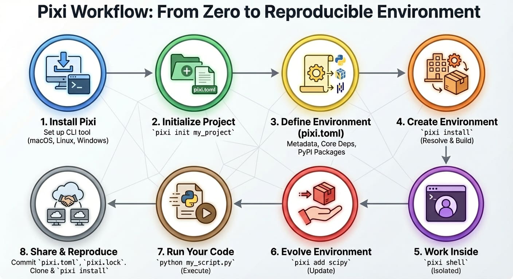

4. Virtual Environment
This tutorial has been “stolen” from Reproducible Machine Learning Workflows for Scientists by the Carpentries Incubator.
Reproducibility is a fundamental aspect of scientific research, and managing computational environments is crucial for ensuring that our code can be run by others. One of the best ways to manage dependencies in Python is through the use of virtual environments.
What is a Virtual Environment?
A virtual environment is a self-contained directory that contains a Python installation and all the packages required for a specific project. It allows us to have different versions of Python and packages for different projects without interfering with each other.
Package Managers
To create a virtual environment, we can use the venv module using pip that comes with Python. However, it’s an outdated approach. Instead, we will use a dedicated package manager, which provides a modern and efficient way to manage virtual environments, package versions, and dependencies. As with different programming languages, there are several managers just for Python: Conda, Mamba, Poetry, and uv - just to name a few. For this course, we will use Pixi. Here’s why.
Pixi
Pixi, to quote the website, “is a fast, modern, and reproducible package management tool”.
- Fast: Building environments and finding compatible package versions is significantly faster than Conda.
- Modern: It is multi-platform, multi-language, memory efficient, and manages complex workflows.
- Reproducible: It keeps track of your package dependencies at both the version and system level, making it easy to reproduce your environment.
Check out this blog post by the creator of Pixi for a comprehensive introduction: Pixi - reproducible, scientific software workflows!.
You should have installed Pixi during the setup process (Setting Up).

Pixi addresses the concept of computational reproducibility by focusing on a set of main features:
- Virtual environment management: Pixi can create environments that contain conda packages and Python packages and use or switch between environments easily.
- Package management: Pixi enables the user to install, update, and remove packages from these environments through the
pixicommand line. - Task management: Pixi has a task runner system built-in, which allows for tasks with custom logic and dependencies on other tasks to be created.
It also combines these features with robust behaviors:
- Automatic lock files: Any changes to a Pixi workspace that can mutate the environments defined in it will automatically and non-optionally result in the Pixi lock file for the workspace being updated. This ensures that any and every state of a Pixi project is trivially computationally reproducible.
- Solving environments for other platforms: Pixi lets you solve dependencies for platforms other than your current machine. This means collaborators can be confident all environments will work with no additional setup.
- Parity of conda and Python packages: Pixi handles both conda and Python packages seamlessly. It first solves all conda package requirements, locks the environment, then solves Python package dependencies. Pixi checks for overlaps and only installs missing Python dependencies, ensuring full reproducibility without conflicts between the two ecosystems.
- Efficient caching: Pixi uses global caching so packages are downloaded once and reused across projects.
Project-based workflows
Pixi uses a “project-based” workflow that scopes your project’s environments and tools to the project’s directory tree.
Pros
- Environments in the workspace are isolated to the project and can not cause conflicts with any tools or projects outside of the project.
- A high level declarative syntax allows for users to state only what they need, making even complex environments easy to understand and share.
- Environments can be deleted and rebuilt in seconds without worry of breaking other projects. This gives you freedom to explore and develop without fear.
Cons
- As each project has its own version of its packages installed, and does not share a copy with other projects, the total amount of disk space on a machine can be larger than other forms of development workflows. This can be mitigated for disk limited machines by cleaning environments not in use while keeping their lock files and cleaning the system cache periodically.
- Each project needs to be set up by itself and does not reuse components of previous projects.
Pixi project files
Every Pixi project begins with creating a manifest file. A manifest file is a declarative configuration file that lists the high-level requirements of a project. Pixi then takes those requirements and constraints and solves for the full dependency tree.
Let’s create our first Pixi project. Use pixi init to create a new project directory and initialize a Pixi manifest with your machine’s configuration.
pixi init gecs-pixiCreated <working-directory>/gecs-pixi/pixi.tomlNavigate to the gecs-pixi directory and check the directory structure
cd gecs-pixi
ls -a./
../
.gitattributes
.gitignore
pixi.tomlWe see that Pixi has set up Git configuration files for the project as well as a Pixi manifest pixi.toml file. Checking the default manifest file, we see three TOML tables: workspace, tasks, and dependencies.
cat pixi.tomlor open pixi.toml in a text editor to see the contents of the manifest file.
[workspace]
authors = ["Your Name <your email from your global Git config>"]
channels = ["conda-forge"]
name = "gecs-pixi"
# This will be whatever your machine's platform is
platforms = ["osx-arm64"]
version = "0.1.0"
[tasks]
[dependencies]The manifest contains three main TOML tables:
- [workspace]: Defines metadata and properties for the entire project (name, channels, platforms, version).
- [tasks]: Defines tasks for the task runner system to execute from the command line and their dependencies.
- [dependencies]: Defines the conda package dependencies from the
channelsin yourworkspacetable.
At the moment there are no dependencies defined in the manifest, so let’s add Python using the pixi add.
pixi add python✔ Added python >=3.13.5,<3.14What happened? We saw that python got added, and we can see that the pixi.toml manifest now contains python as a dependency
cat pixi.toml[workspace]
channels = ["conda-forge"]
name = "gecs-pixi"
# This will be whatever your machine's platform is
platforms = ["osx-arm64"]
version = "0.1.0"
[tasks]
[dependencies]
python = ">=3.13.5,<3.14"Further, we also now see that a pixi.lock lock file has been created in the project directory as well as a .pixi/ directory.
ls -a./
../
.gitattributes
.gitignore
.pixi/
pixi.lock
pixi.tomlThe .pixi/ directory contains the installed environments. We can see that at the moment there is just one environment named default
ls -a .pixi/envs/default/Inside the .pixi/envs/default/ directory are all the libraries, header files, and executables that are needed by the environment.
The pixi.lock lock file is a YAML file that contains two definition groups: environments and packages. The environments group lists every environment in the workspace for every platform with a complete listing of all packages in the environment. The packages group lists a full definition of every package that appears in the environments lists, including the package’s URL on the conda package index and digests (e.g. sha256, md5).
These groups provide a full description of every package described in the Pixi workspace and its dependencies and constraints on other packages. This means that for each package specified, that version, and only that version, will be downloaded and installed in the future.
We can even test that now by deleting the installed environment fully with pixi clean and then getting it back (bit for bit) in a few seconds with pixi install.
pixi clean removed <working-directory>/gecs-pixi/.pixi/envs pixi install✔ The default environment has been installed.We can also see all the packages that were installed and are now available for us to use with pixi list
Extending the manifest
Let’s extend this manifest to add the Python library numpy and the Jupyter tools notebook and jupyterlab as dependencies.
Another way to extend the manifest is to add a task. Tasks perform commands in the workspace’s environments and can depend on other tasks. Let’s add a task named lab that will launch Jupyter Lab in the current working directory.
We can manually edit the pixi.toml with a text editor to add a task named lab that when called executes jupyter lab. This is sometimes the easiest thing to do, but we can also use the pixi CLI.
pixi task add lab "jupyter lab" --description "Launch JupyterLab"✔ Added task `lab`: jupyter lab, description = "Launch JupyterLab"Now the pixi.toml manifest has been updated with the new task
[workspace]
channels = ["conda-forge"]
name = "gecs-pixi"
platforms = ["osx-arm64"]
version = "0.1.0"
[tasks]
lab = { cmd = "jupyter lab", description = "Launch JupyterLab" }
[dependencies]
python = ">=3.13.5,<3.14"
numpy = ">=2.3.2,<3"
notebook = ">=7.4.5,<8"
jupyterlab = ">=4.4.5,<5"Task overview
A user can also run pixi task list to get a summary of the tasks that are available to them in the workspace.
pixi task listTasks that can run on this machine:
-----------------------------------
lab, start
Task Description
lab Launch JupyterLabHere we used pixi run to execute tasks in the workspace’s environments without ever explicitly activating the environment. This is a different behavior compared to tools like conda and Python virtual environments, where the assumption is that you have activated an environment before using it. With Pixi we can do the equivalent with pixi shell, which starts a subshell in the current working directory with the Pixi environment activated.
pixi shellNotice how your shell prompt now has (gecs-pixi) (the workspace name) preceding it, signaling to you that you’re in the activated environment. You can now directly run commands that use the environment.
pythonPython 3.13.5 | packaged by conda-forge | (main, Jun 16 2025, 08:27:50) [GCC 13.3.0] on linux
Type "help", "copyright", "credits" or "license" for more information.
>>>As we’re in a subshell, to exit the environment and move back to the shell that launched the subshell, just exit the shell.
exitMulti-platform projects
So far your project only supports one platform, but we can extend it to additionally support platforms.
Using the pixi workspace, one can add the platforms with
pixi workspace platform add linux-64 osx-arm64 win-64✔ Added linux-64
✔ Added osx-arm64
✔ Added win-64This both adds the platforms to the workspace platforms list and solves for the platforms and updates the lock file!
You can also manually edit the pixi.toml with a text editor to add the desired platforms to the platforms list. In this case you need to run pixi install to solve for the new platforms and update the lock file.
The resulting pixi.toml manifest looks like this
[workspace]
channels = ["conda-forge"]
name = "gecs-pixi"
platforms = ["linux-64", "osx-arm64", "win-64"]
version = "0.1.0"
[tasks.lab]
description = "Launch JupyterLab"
cmd = "jupyter lab"
[tasks.start]
description = "Start exploring the Pixi project"
depends-on = ["lab"]
[dependencies]
python = ">=3.13.5,<3.14"
numpy = ">=2.3.2,<3"
notebook = ">=7.4.5,<8"
jupyterlab = ">=4.4.5,<5"Global Tools
With the pixi global, users can manage globally installed tools in a way that makes them available from any directory on their machine.
As an example, we can install the bat program — a cat clone with syntax highlighting and Git integration — as a global utility from conda-forge using pixi global.
pixi global install bat└── bat: 0.25.0 (installed)
└─ exposes: batPixi has now installed bat for us in a custom environment under ~/.pixi/envs/bat/ and then exposed the bat command globally by placing bat on our shell’s PATH at ~/.pixi/bin/bat. This now means that for any new terminal shell we open, bat will be available to use.
Using pixi global has also created a ~/.pixi/manifests/pixi-global.toml file that tracks all of the software that is globally installed by Pixi
version = 1
[envs.bat]
channels = ["conda-forge"]
dependencies = { bat = "*" }
exposed = { bat = "bat" }As new software is added to the system with pixi global this global manifest is updated. If the global manifest is updated manually, the next time pixi global update is run, the environments defined in the global manifest will be installed on the system. This means that by sharing a Pixi global manifest, a new machine can be provisioned with an entire suite of command line tools in seconds.
If you want to delete a globally installed environment, you can use pixi global uninstall to remove the tool from the system and update the global manifest.
pixi global uninstall batIn this case we could have used pixi global remove bat as well since there is only one version of bat installed. Difference between remove and uninstall is that remove can be used to remove a specific version of a tool if there are multiple versions installed, while uninstall will remove environment with that name.
Version controlling the project
Now, we can version control our project with Git and share it on GitHub. Use terminal to add the pixi.toml and pixi.lock files to Git and commit them to your local repository. Alternatively, you can use or VS Source Control tab to do the same thing automatically and publish the repository on GitHub in one go.
For local Git commit, use the following commands in the terminal:
git init
git add pixi.* .git*
git commit -m "first commit"The Book Project
Throughout this tutorial, we’ve built a Pixi project from scratch. If you’d like to see a complete, working example of everything we’ve covered, you can access the finished project on GitHub at https://github.com/igorsdub/gecs-venv.
To use this example project on your machine:
cd ~
git clone https://github.com/igorsdub/gecs-venv.git
cd gecs-venvThen follow the instructions in the README.md file to set up the project.